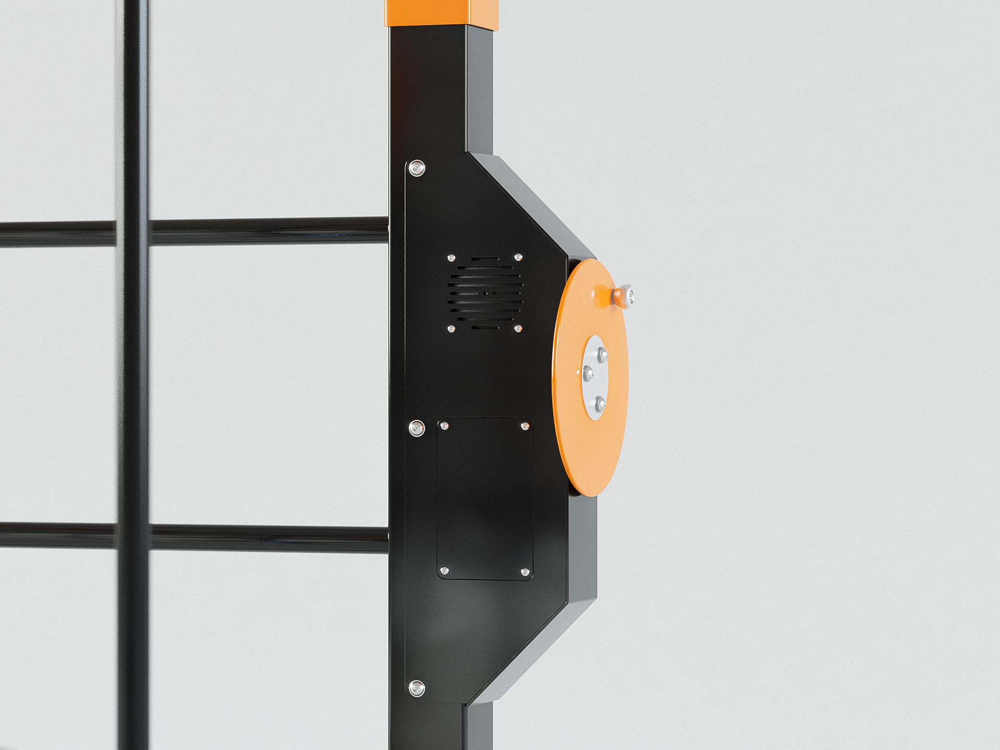
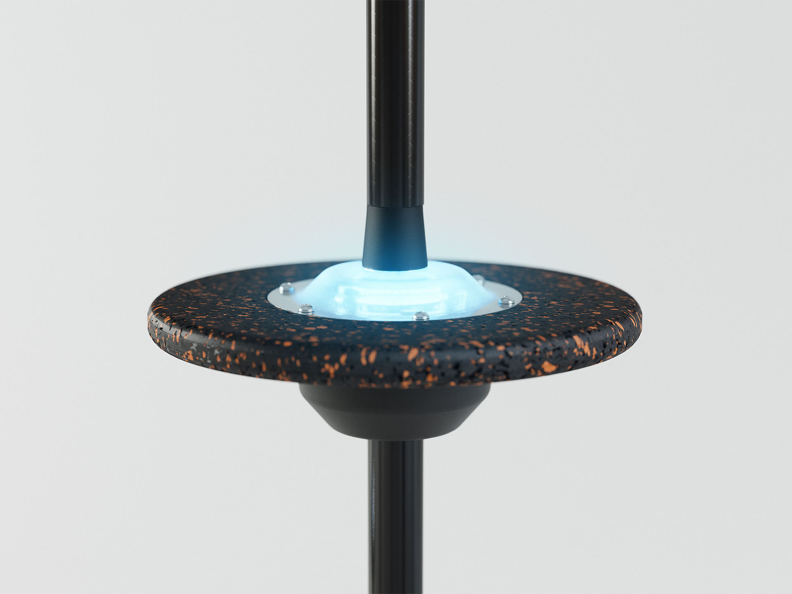
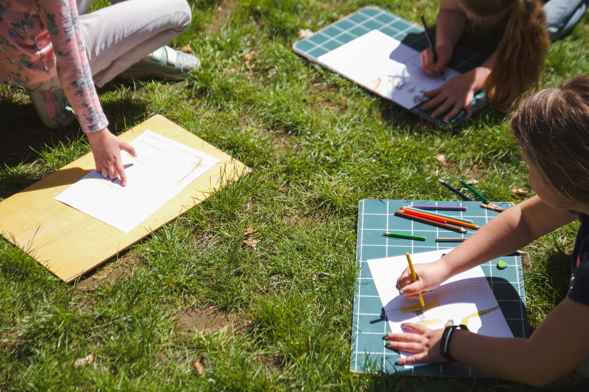
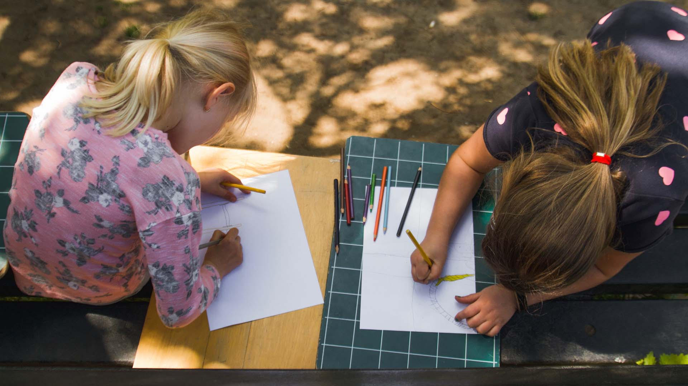
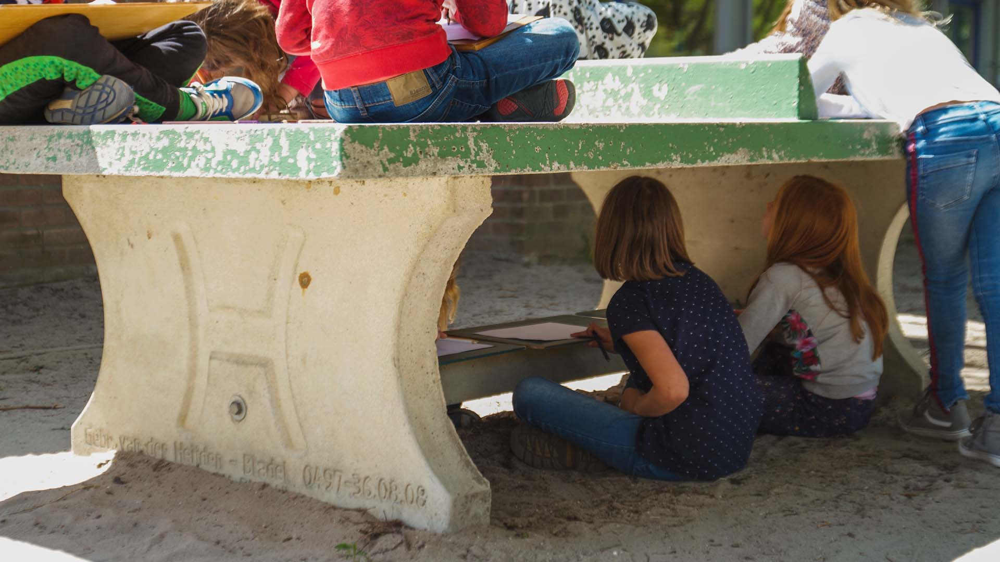
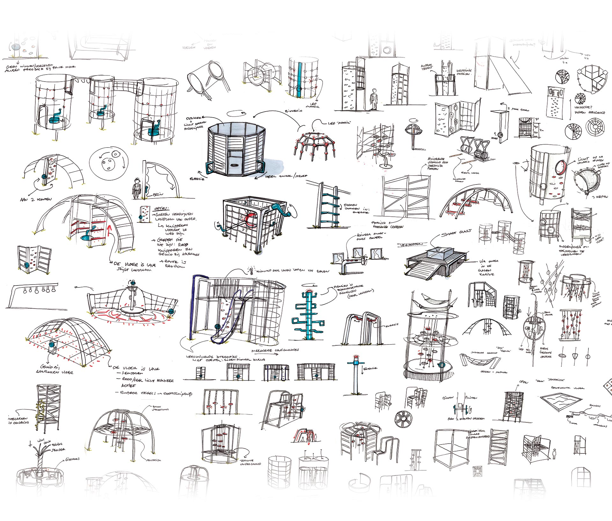
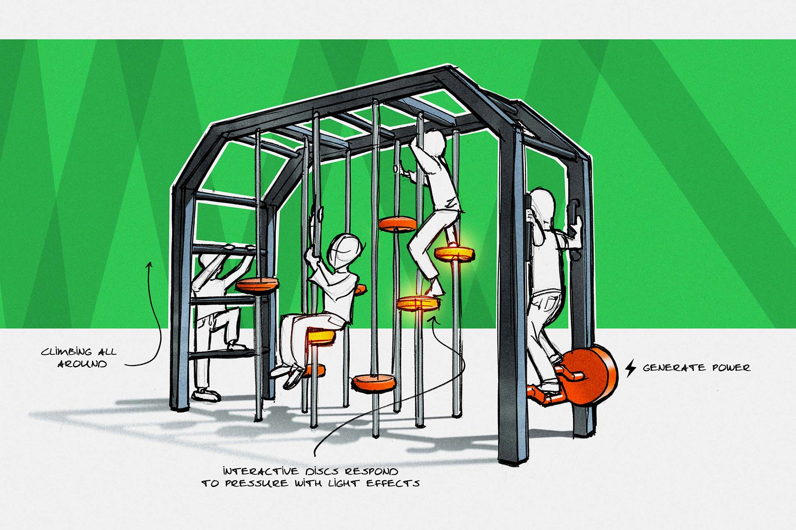
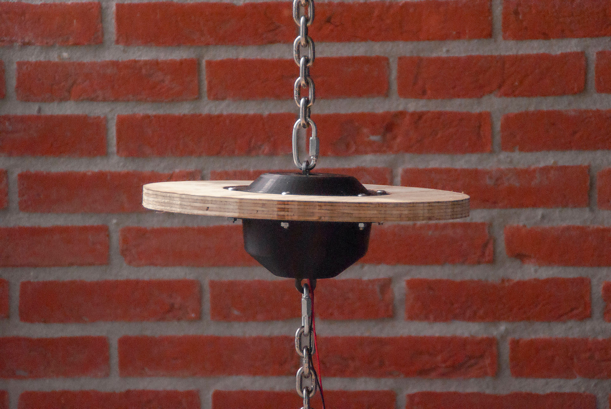
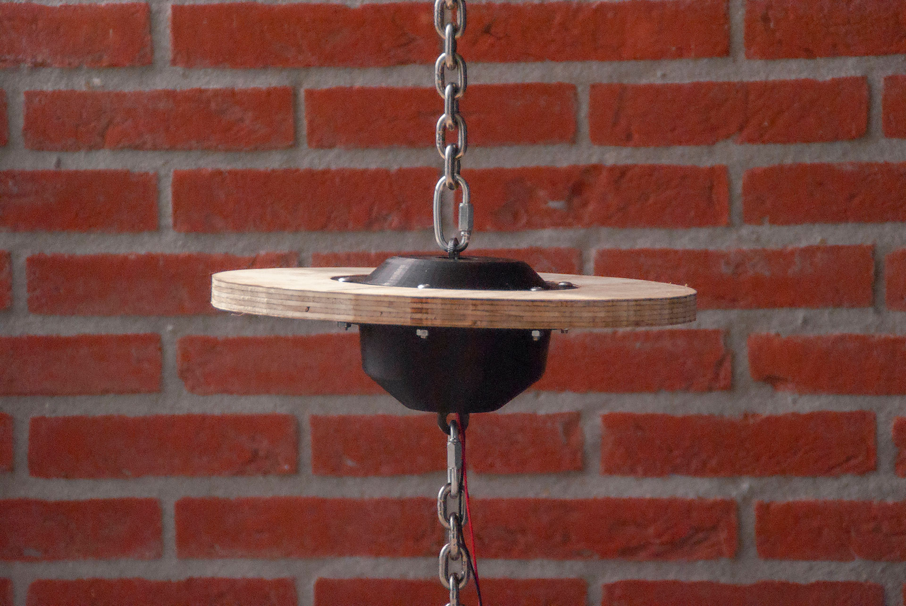
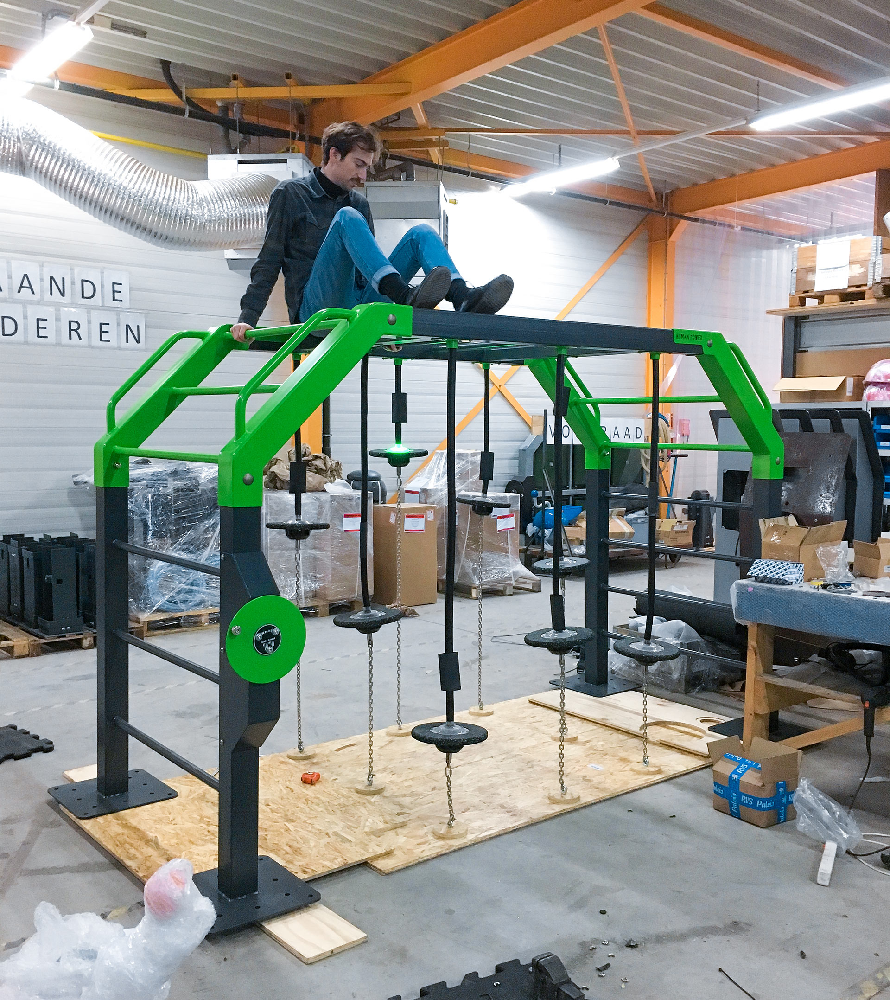

Interactive Climber
For my graduation in 2019, I designed an Interactive Climber for Playnetic's new Traditionals product line. With this new product line Playnetic reimagined playground classics as innovative and interactive playground equipment.
Download thesis PDF (Dutch, 104 pages, 14 MB)
This climber features interactive discs that are suspended in the air by chains with rubber sleeving. Positioned at different heights they create a dynamic climbing experience. De discs detect if pressure is applied to them and can respond with light, sound and haptic effects depending on what game is activated.
Exhibited at FSB Cologne 2019
Playnetic playground equipment works on Human Power. Energy for the interactive elements of this climber is generated by turning the charging wheel. Because of this sustainable way of generating energy, Playnetic playground equipment does not have to be connected to the power grid.
 Co-Designing with kids: getting insight into their needs by letting them design their own playground.
 
Children have the constant urge to explore and push their boundaries. My ideation was focused around generating curiosity and letting children explore and play at their own pace: non-directive play. Interactive elements should stimulate their senses and make the climbing experience more engaging and immersive.

The interactive discs are the main innovation. Multiple prototyping iterations where done to develop a reliable pressure detection mechanism.
 

A full size prototype is essential for evaluating the design. A realistic assessment of play value can only be done with children playing on the real thing.
